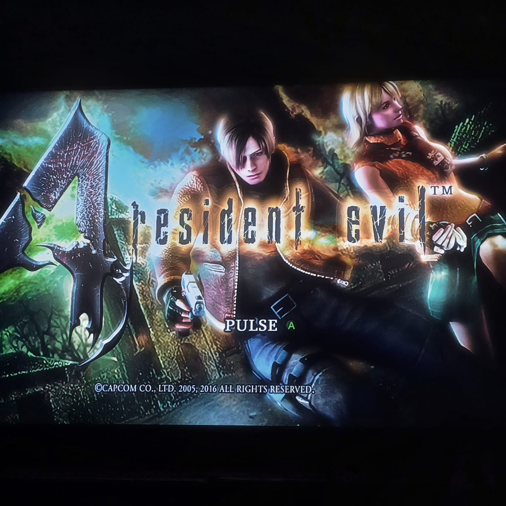
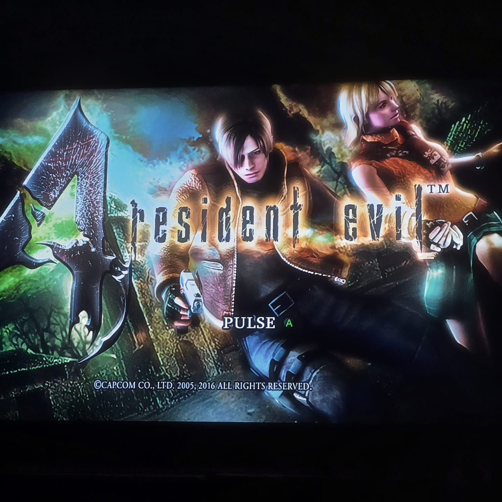
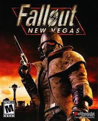
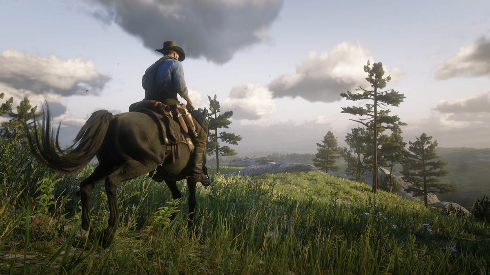

Resident Evil
La saga de juegos Resident Evil está enfocada en el terror, me gustan porque son muy entretenidos y con una jugabilidad que personalmente me parece muy buena.
Cuando no tengo pendientes me gusta jugar videojuegos, los que más disfruto son los de aventura o mundo abierto.
La saga de juegos Resident Evil está enfocada en el terror, me gustan porque son muy entretenidos y con una jugabilidad que personalmente me parece muy buena.
Los juegos de Fallout entran en el genéro de rol y mundo abierto, ya que dependiendo de tus decisiones la historia tomará un rumbo diferente, esto es bueno porque puedes jugarlo multiples veces y obtener resultados diferentes para el final de la historia.
Las dos entregas de Red Dead Redemption están ambientadas en el viejo oeste las cuales cuentan con una historia y jugabilidad muy buenas, además de que sus mundos estan llenos elementos que fomentan a la exploración.
